Válvulas
Ref.: VÁLVULAS NEUMÁTICAS Y CILINDROS NEUMÁTICOS (8:31; Neheyler Mechatronics; 296.608 visualizações, 24 de fev. de 2018).
Página inicial da NEHEYLER MECHATRONICS --> https://www.neheylermechatronics.com
Objetivo principal: direcionar e distribuir ar comprimido.
Tipos de válvulas:
- Distribuidoras;
- Reguladoras;
- Direcionais;
- De bloqueio
- Sequenciais
Válvulas Distribuidoras
Exemplo:
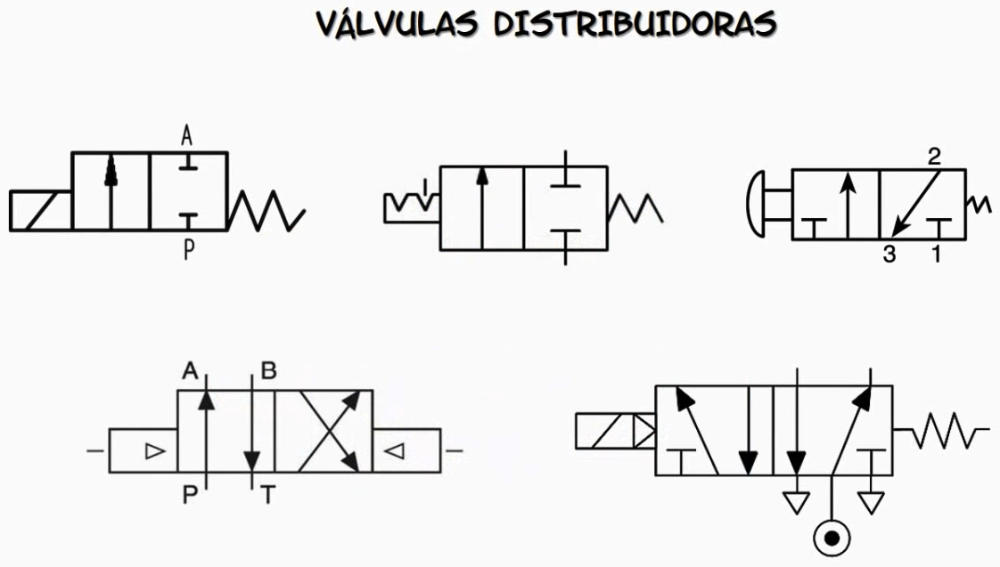
Detalhes:
- Simbologia;
- Tipos de acionamento;
- Configurações
Classificação
- No. De vias e posições;
- Tipo de acionamento;
- Construção interna.
Exemplos:
Válvula 3/2 (Válvula 4/2, válvula 5/2, válvula 5/3) - nomenclatura: 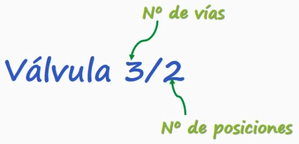
Posições:
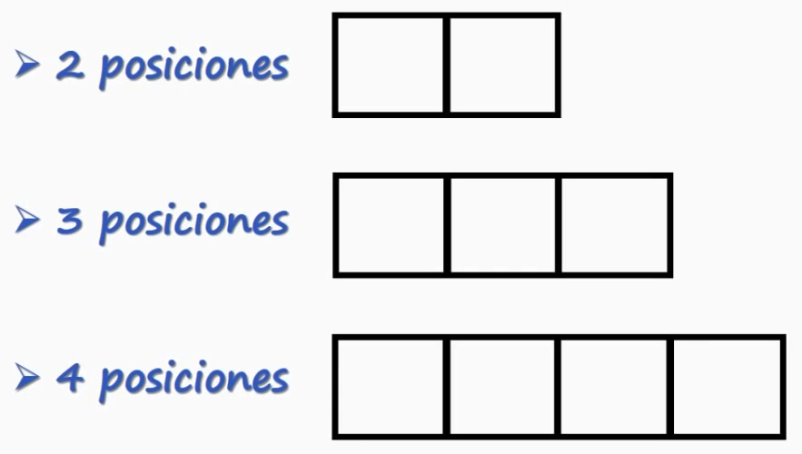
Mais usadas: 2 e 3 posições.
Vias: quantidade de orifícios ou conexões.
Exemplo: 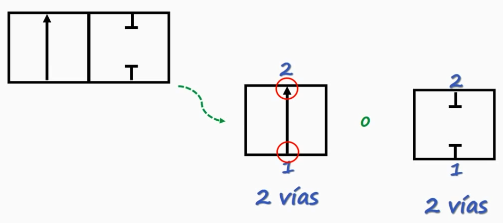
Como esta válvula possui 2 "caixas" e 2 orifícios é uma válvula de 2/2.
Detalhes: sentido do ar-comprimido: 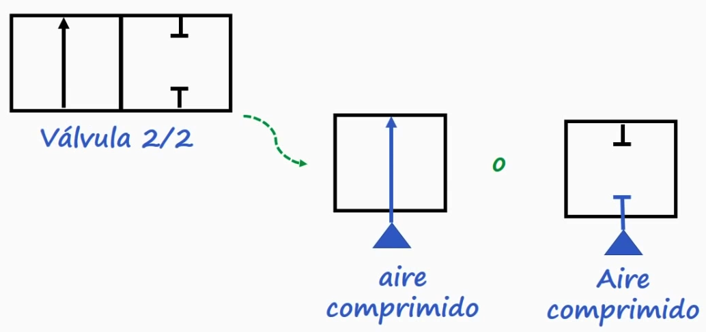
Exemplo
Se nota 3 orifícios, ou 3 vias e 2 "caixas" (então 2 posições).
Exemplo
=> válvula de 2 posições mas... 4 orifícios/conexões (4 vias): 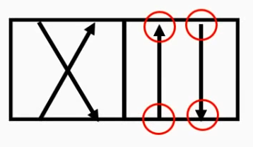
Portanto é uma válvula 4/2.
Outros exemplos: 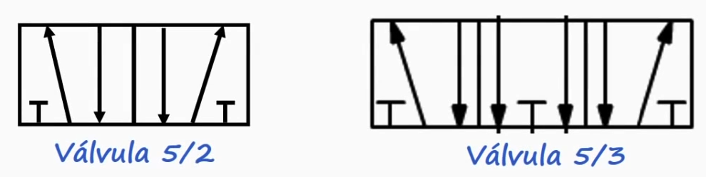
Identificação das vias/conexões: normas ISO e CETOP:
| Norma ISO (DIN ISO1219) | Norma CETOP | Obs |
|---|---|---|
| 1 | P | Conexão de ar-comprimido (alimentação). |
| 2, 4, 6 | A, B, C | Conexões de trabalho ("entradas"). |
| 3, 5, 7 | R, S, T | Conexões de saída ou escape. |
| 12, 14, 16 | X, Y, Z | Conexões (entradas) de controle, direcionamento ou acionamento. |
| 9 | L | Escape, fuga. |
Exemplo com válvula 3/2:
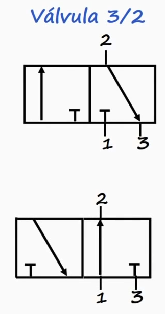
Figura acima: primeiro caso: válvula que está normalmente fechada (NF). Segundo caso, mesma tipo de válvula, mas está na posição normalmente aberta (NA).
Observações:
- A posição "default" (em repouso) de uma válvula normalmente é a da direita (para as válvulas de 2 posições) e a "caixa" central para a válvula de 3 posições.
Exemplos:
| Ex | Ex |
|---|---|
| 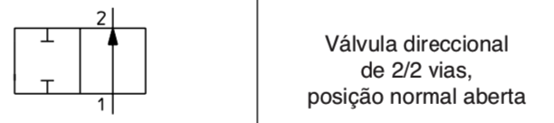 | 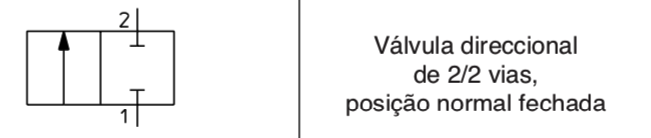 |
Ex
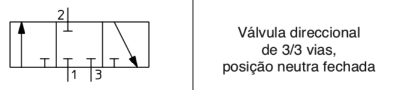
Ex
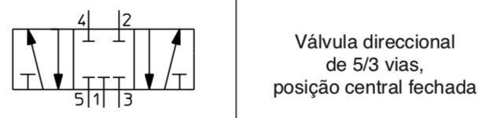
Tipos de Acionamento:
- Manual;
- Mecânico;
- Por ar-comprimido (pneumático);
- Elétrico
Tipos de acionamento manual:
- Manual genérico;
- Pulsador
- Interligado (entrelaçado);
- Alavanca;
- Pedal:
Acionamentos manuais:
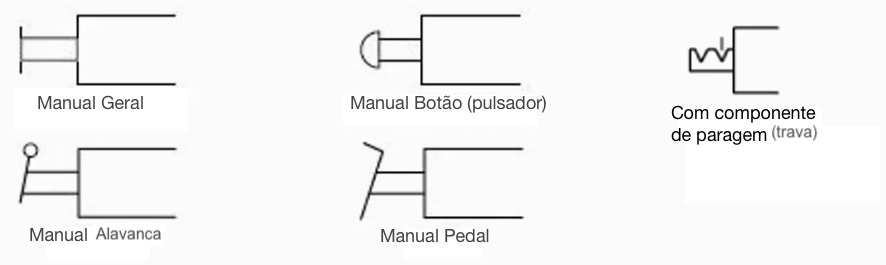
Acionamentos mecânicos:
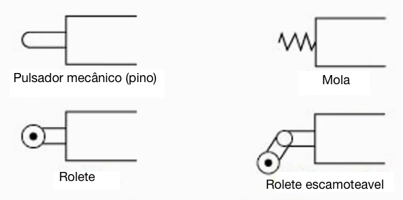
Observações:
Exemplo de cilindro de ação simples com retração automática (por mola) com comando manual mecânico: 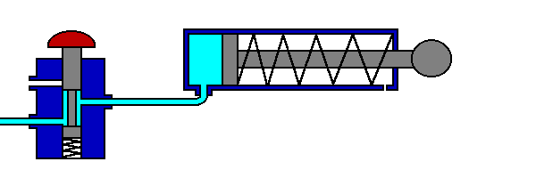
Diagrama:

Detalhe de uma chave elétrica (pulsador elétrico): 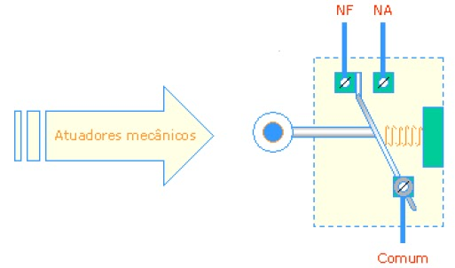
Acionamentos pneumáticos/elétricos:
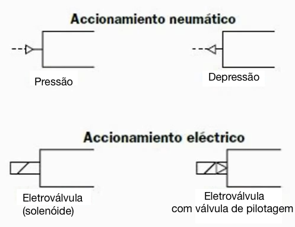
Observações
- Acionamento elétrico: Alimentação padrão de 24 Volts. Os solenóides de algumas válvulas trabalham entre 10 à 30 Vdc e existem versões AC.
- As bobinas dos solenóides destas válvulas seguem padrões (certos diâmetros típicos) para faciitar sua troca (manutenção).
- Detalhe elétrico de botoeira elétrica: 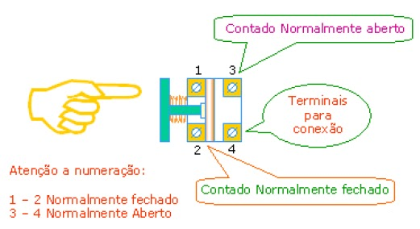
Outros símbolos:
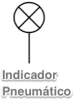
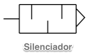
Obs.: Silenciadores são comumento usados nas saídas de retorno de ar. Reduzir descobforto acústico.
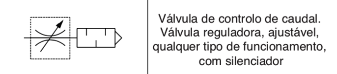
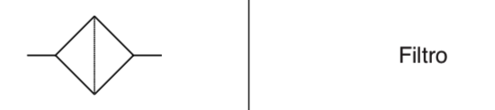
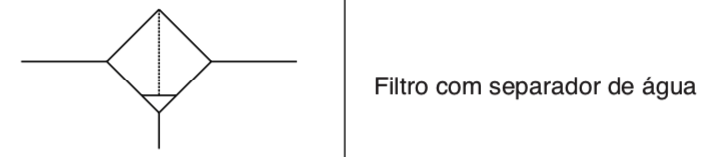
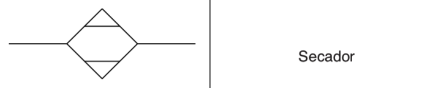
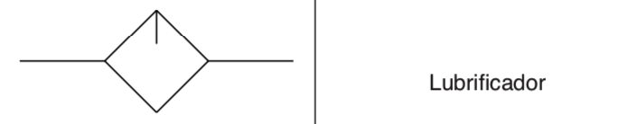
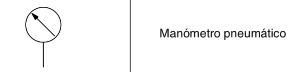
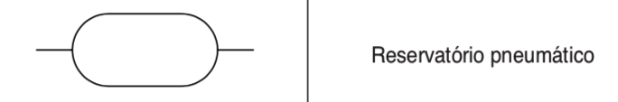
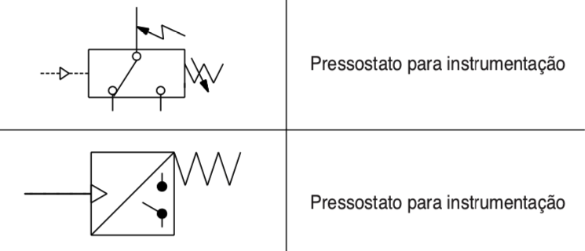
Visualização física de uma válvula
Exemplo: Válvula 4/2:
| Símbolo | Aparência física |
|---|---|
Na posição normal (em repouso), existe conexão entre P para B e A para T (este tipo de conexão é chamada também de "cruzada" ou crosslink. Quando esta válvula está atuada manualmente, a válvula passa para sua posição "paralela" (ou seja, estabelecendo fluxo de P para A e de B para T).
Construção interna:
Exemplo

Esta válvula possui 2 portas de trabalho: A e B, a porta de entrada P e a porta de tanque T. A porta P fica sempre conectada à uma das portas de trabalho (A ou B), enquanto a segunda porta (T) é roteada até o tanque. Na sua posição normal, existe fluxo de P para B e de A para T. Quando atuada, é estabelecido um fluxo de P para A e de B para T -- ver figura abaixo:
Funcionamento:
| Posição de Repouso | Válvula atuada |
|---|---|
 |  |
Nota: Figura extraída do Festo FluidSIM (4.2), Didactics material / Basics and working principles / way valves/ 4/2-way valve, two pistons.
Exemplo
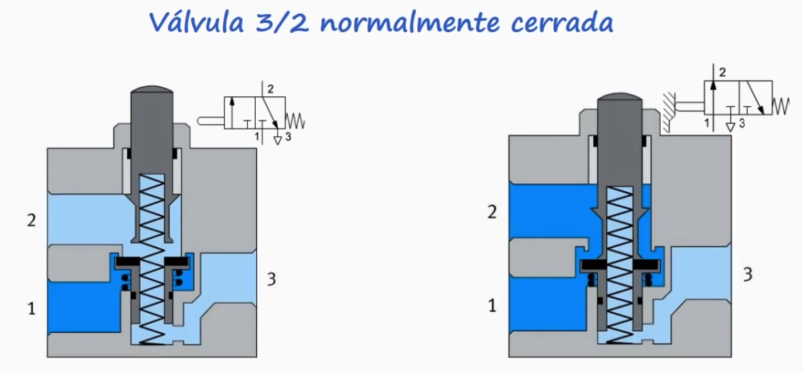
Obs.: o êmbolo da válvula do lado direito está pressionada ou recolhida, o que permite a passagem do ar-comprimido entre as conexões 1-->2.
Exemplo
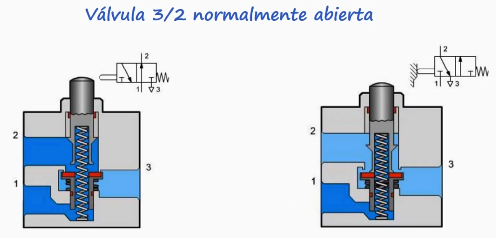
Exemplo
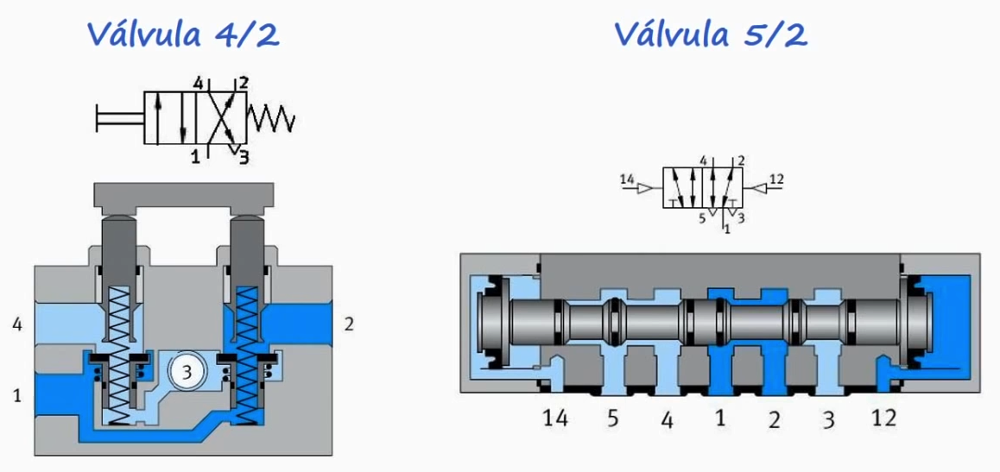
Neste caso, a válvula 5/2 é assionada por ar-comprimido.
Exemplo de funcionamento de uma válvula 5/2: 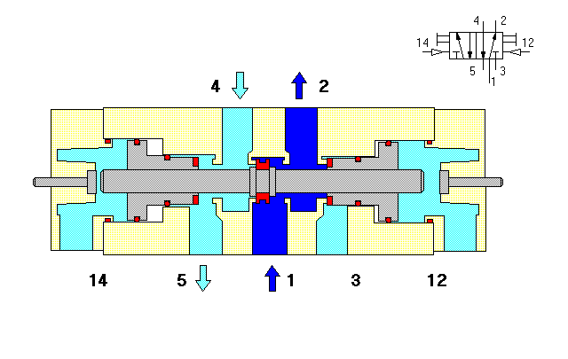 Fonte: https://gifer.com/en/IpRW
Exemplo de válvula 5/2: 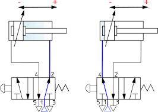
Exemplo
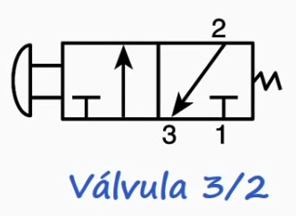
Últimas observações:
- Existem válvulas de pulso ou com "memória" que não exigem ficar energizadas todo o tempo.
- A válvula pode possuir dispositivo de segurança para o caso de falta de energia elétrica.
- Há válvulas com botões mecânicos que acionam mecanicamente o recuo ou avanço de um cilindro pneumático.
Referências
Simbologia Válvulas:
YouTube: Simbologia Válvulas Direcionais (Parte 01) (UP Educação Profissional; 28K visualizações; 21/03/2019) - Norma NBR 8897:
Na parte um (1) desta aula de simbologia das Válvulas Direcionais, faremos uma breve introdução de como as válvulas direcionais são classificadas, quanto: - ao numero de posições; - numero de vias; - posição inicial; - NA ou NF; - tipo de centro; - tipos de acionamentos e; - tipos de retorno. E já apresentaremos o que são as posições de uma válvula e as vias de uma válvula direcional.
YouTube: Simbologia Válvulas Direcionais (Parte 02) (UP Educação Profissional; 68K visualizações; 21/03/2019)
Na parte dois (2) desta aula de simbologia das Válvulas Direcionais, é apresentado como fazemos para identificar as vias e as posições em uma válvula direcional, e como fazemos para nomeá-las conforme a norma ISO 1219. Este conteúdo é apresentado de forma bastante didática e com cinco exemplos, de tipos de válvulas direcionais.
YouTube: Simbologia Válvulas Direcionais (Parte 03) (UP Educação Profissional; 34K visualizações; 21/03/2019)
Na parte três (3) desta aula de simbologia das Válvulas Direcionais, é apresentado os tipos de acionamentos e retornos das válvulas direcionais, conforme a norma ISO 1219. Este conteúdo é apresentado de forma bastante didática e com vários exemplos.
Fim | Próximo conteúdo sugerido: Cilindros Pneumáticos, Sensores, Simulação (Parte 1).